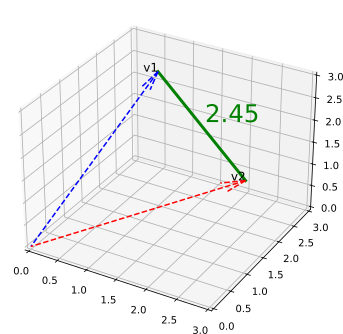
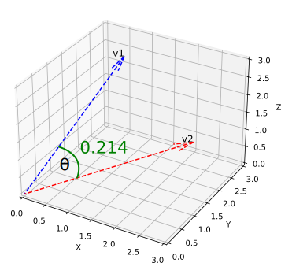

pgvector for Python developers
About me
Python Cloud Advocate at Microsoft
Formerly: UC Berkeley, Coursera, Khan Academy, Google
Find me online at:
| Mastodon | @pamelafox@fosstodon.org |
| @pamelafox | |
| GitHub | www.github.com/pamelafox |
| Website | pamelafox.org |
Vectors 101
What are vectors?
Vectors are lists of numbers that represent items in a high-dimensional space.
For example, a vector representing the string "apple" might be [0.5, 0.3, 0.8].
Each number in the vector is a dimension of the space.
Why care about vector embeddings?
Similarity
Find similar items in a large dataset, useful for recommendations.

Search
Find items that are similar to a query.
Generating vectors
Use a model to generate vectors for items:
input → model → vector
"telephone" → word2vec → [0.5, 0.3, 0.8, ..]
Popular models:
| Model | Input types | Dimensions |
|---|---|---|
| Word2Vec | Word | 50-300 |
| OpenAI text-embedding-ada-002 | Text | 1536 |
| OpenAI text-embedding-3 | Text | 256-3072 |
| Azure Computer Vision Multi-modal | Text or Image | 1024 |
Vector distance metrics
Euclidean (L2)
Generally preferred over Manhattan.
Cosine distance
Same as inner product for normalized vectors.
Storing vectors in PostgreSQL
Using the pgvector extension
To use the pgvector extension in PostgreSQL:
- Install the extension per the instructions at:
https://github.com/pgvector/pgvector - Enable the extension:
CREATE EXTENSION vector;
Try the extension in the pgvector dev container @ aka.ms/pgvector-playground
Storing and querying vectors
- Create a table with a
vectorcolumn:CREATE TABLE items (id bigserial PRIMARY KEY, embedding vector(3)); - Insert vectors into the table:
INSERT INTO items (embedding) VALUES ('[1,2,3]'), ('[4,5,6]'); - Query using the distance operators:
SELECT * FROM items ORDER BY embedding <=> '[3,1,2]' LIMIT 5;SELECT embedding <=> '[3,1,2]' AS distance FROM items;
Distance operators
<+> Manhattan (L1)
<#> Negative inner (dot) product
Note that pgvector multiplies the dot product by -1, so 11 becomes -11 in this case.
<-> Euclidean (L2)
<=> Cosine distance
Approximate nearest neighbors (ANN) indexes
Use ANN indexes for fast vector searches:
- HNSW (Hierarchical Navigable Small World)
CREATE INDEX ON items USING hnsw (embedding vector_ip_ops); - IVFflat (Inverted File with Flat indexes)
CREATE INDEX ON items USING ivfflat (embedding vector_l2_ops) WITH (lists = 100);
Using pgvector with Python
Using the pgvector package
Install the pgvector package:
pip install pgvector
Then use it with one of these libraries:
- psycopg2, psycopg3
- asyncpg
- SQLAlchemy
- SQLModel
- Django
- Peewee
Learn more @ https://github.com/pgvector/pgvector-python
Building a similar items API
query = select(Item).where(Item.id == target_id)
target_item = session.execute(query).scalars().first()
closest = session.scalars(
select(Item).order_by(Item.embedding.cosine_distance(target_item.embedding)).limit(5)
)
for item in closest:
print(item.title)
Building a search API
Search for items similar to a query:
target_embedding = get_embedding_from_text(query)
closest = session.scalars(
select(Item).order_by(Item.embedding.cosine_distance(target_embedding)).limit(5)
)
for item in closest:
print(item.title)
Demo @ aka.ms/pgvector-search
Building a hybrid search API
Combine full-text search with vector search:
WITH semantic_search AS (
SELECT id, RANK () OVER (ORDER BY embedding <=> %(embedding)s) AS rank FROM documents
ORDER BY embedding <=> %(embedding)s LIMIT 20
),
keyword_search AS (
SELECT id, RANK () OVER (ORDER BY ts_rank_cd(to_tsvector('english', content), query) DESC)
FROM documents, plainto_tsquery('english', %(query)s) query
WHERE to_tsvector('english', content) @@ query
ORDER BY ts_rank_cd(to_tsvector('english', content), query) DESC LIMIT 20
)
SELECT
COALESCE(semantic_search.id, keyword_search.id) AS id,
COALESCE(1.0 / (%(k)s + semantic_search.rank), 0.0) +
COALESCE(1.0 / (%(k)s + keyword_search.rank), 0.0) AS score
FROM semantic_search
FULL OUTER JOIN keyword_search ON semantic_search.id = keyword_search.id
ORDER BY score DESC LIMIT 5
Demo @ aka.ms/pgvector-hybridsearch
Thank you!
Grab the slides @ aka.ms/pgvector-python
Play around in the pgvector dev container @ aka.ms/pgvector-playground
Find me online at:
| Mastodon | @pamelafox@fosstodon.org |
| @pamelafox | |
| GitHub | www.github.com/pamelafox |
| Website | pamelafox.org |
Let me know about your experiences with PostgreSQL and pgvector!